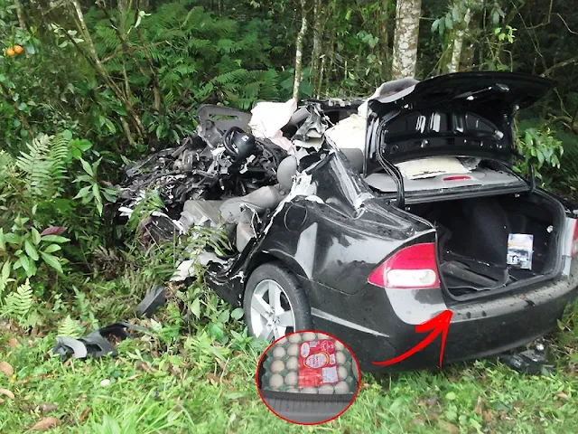

REGISTRO Nº 114OCORRÊNCIAS LOCAIS
O acidente na rodovia e o ovo que permaneceu intacto
Após uma colisão durante a chuva, os destroços pareciam confirmar um acidente comum. Mas, entre os objetos encontrados no porta-malas, havia algo que não deveria ter sobrevivido ao impacto.
LER REGISTRO ↗